磨房APP
磨房保险
磨房旅行服务
登录
免费注册
目的地
户外线路
new
南京玄武湖公园露营
|
武汉古琴台小环线徒步
|
杭州普陀山自驾
|
深圳溪涌-坝光村骑行
|
更多...
户外指南
徒步
|
潜水
|
骑行
|
安全
热门目的地
贝加尔湖
|
南疆
|
尼泊尔
|
新西兰
|
更多...
活动
活动约伴
大型活动
百公里
|
200公里骑行
活动相册
磨房活动
|
远方精彩
社区
论坛
长假远行
|
异域之旅
|
自驾之路
|
驴光掠影-坝光村骑行
|
装备论坛
|
自然
|
山野
|
自行车
|
越跑越野
|
溪涧运动
|
休闲
|
游泳
|
休闲
|
小驴在野
|
潜水
|
水上运动
|
冰雪运动
|
天外飞仙
|
通讯与导航
安全回家
|
站务处理
|
磨房公益
|
磨房茶舍-坝光村骑行
|
与食巨近
|
Do You Hike ?
|
磨房15周年
|
廉价航空
|
签证与护照
|
出行保险
|
百公里
|
200公里骑行
|
发现广州
|
户外资讯
城市
深圳
|
广州
|
东莞
|
上海
|
北京
|
惠州
|
成都
|
佛山
|
中山
|
佛山
|
杭州
|
更多城市...
圈子
专题
|
ISPO
|
发现新加坡
|
亚洲户外展
|
索尼酷拍
|
大鹏国际户外嘉年
|
班夫电影
服务
旅行预订
保险
|
住宿
杂货
老街
|
磨房淘宝店
冲绳
青海湖
科罗拉多大峡谷
五台山
肯尼亚
台湾
亚庇
南美洲
甘南
尼泊尔
唯美天路
By -
独落枫
什么是线路?
磨房户外线路是由驴友贡献分享、并亲身体验过的各种市郊户外活动和玩法。找一条喜欢的线路，去户外吧！
怎么创建?
确定一条你熟悉或喜欢的线路，就大胆地点击创建吧！你分享的信息将会帮助到很多人哦。
创建线路
热门推荐
唯美天路
麦理浩径
走遍大屿
烂漫花海
香港郊野
梦里江南
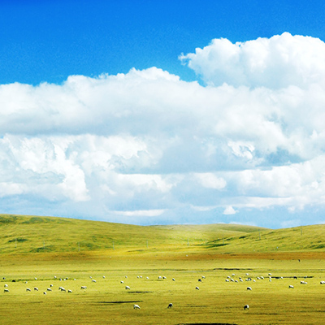
羌塘草原
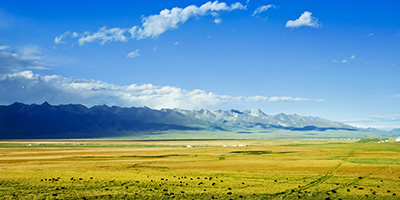
当雄
念青唐古拉山
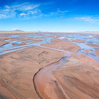
三江源
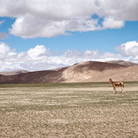
可可西里
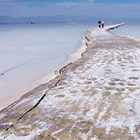
察尔汗盐湖
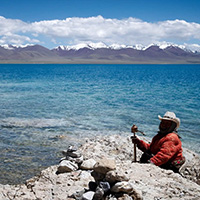
纳木错
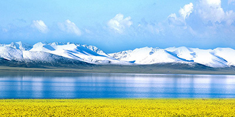
青海湖
拉萨
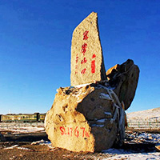
玉珠峰
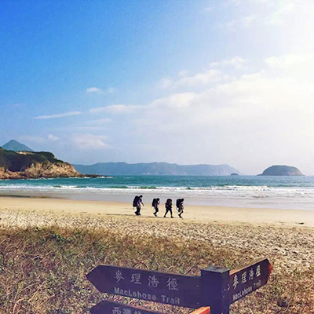
香港麦理浩径第二段徒步
香港麦理浩径第二段徒步
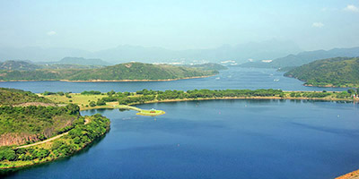
香港麦理浩径第一段徒步
香港麦理浩径第一段徒步
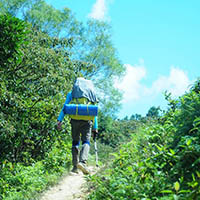
香港麦理浩径第三段徒步
香港麦理浩径第三段徒步
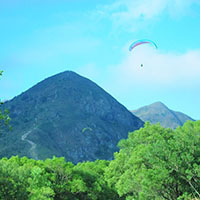
香港麦理浩径第四段徒步
香港麦理浩径第四段徒步
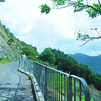
香港麦理浩径第五段徒步
香港麦理浩径第五段徒步
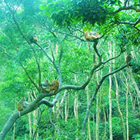
香港麦理浩径第六段徒步
香港麦理浩径第六段徒步
香港麦理浩径第七段徒步
香港麦理浩径第七段徒步
香港麦理浩径第十段徒步
香港麦理浩径第十段徒步
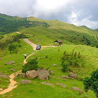
香港麦理浩径第八段徒步
香港麦理浩径第八段徒步
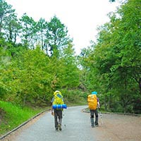
香港麦理浩径第九段徒步
香港麦理浩径第九段徒步
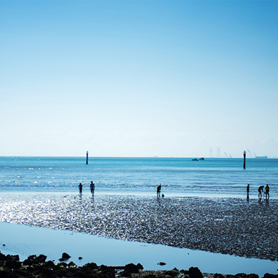
香港凤凰径徒步
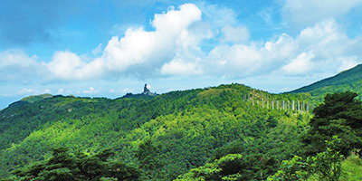
香港凤凰径第四段徒步
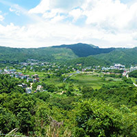
香港凤凰径第一段徒步
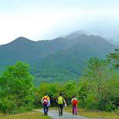
香港凤凰径第十段徒步
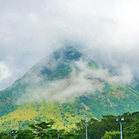
香港凤凰径第三段徒步
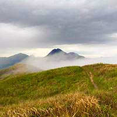
香港凤凰径第五段徒步
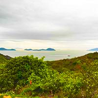
香港凤凰径第七段徒步
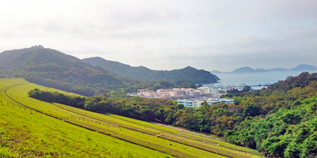
香港凤凰径第九段徒步
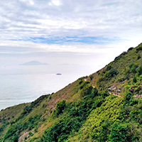
香港凤凰径第二段徒步
香港凤凰径第十二段徒步
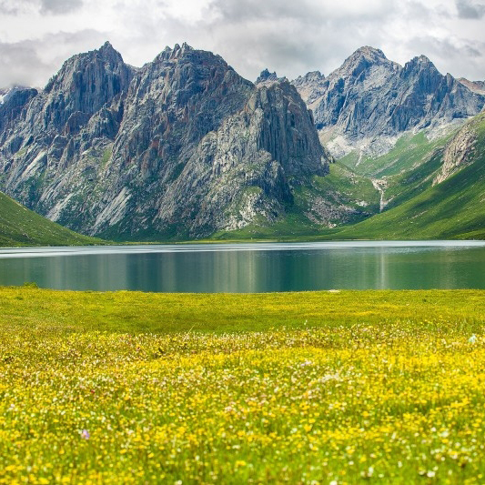
年保玉则
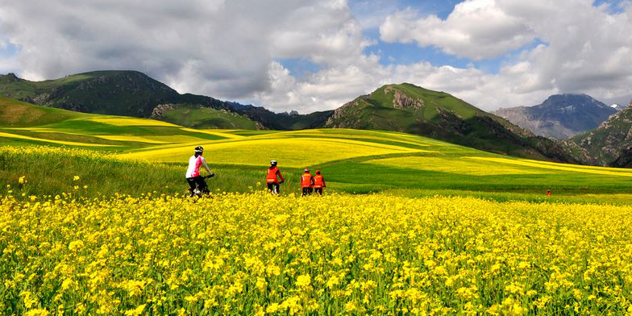
青海湖
小五台山
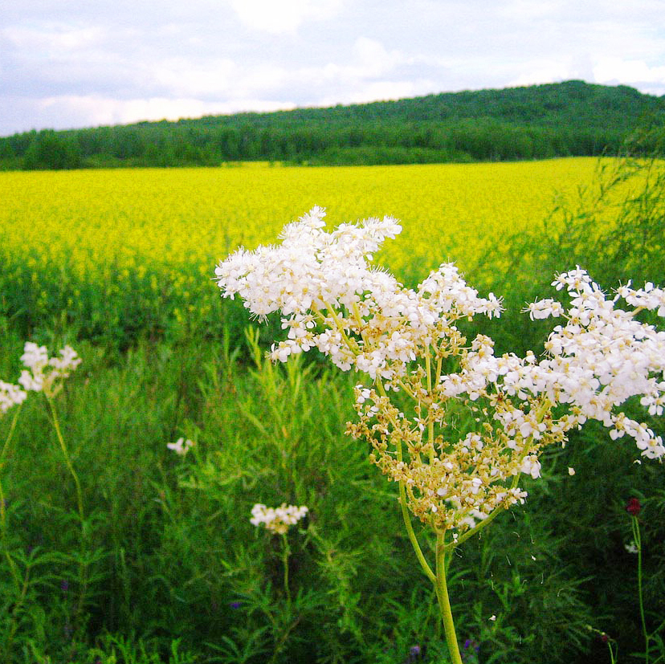
临江
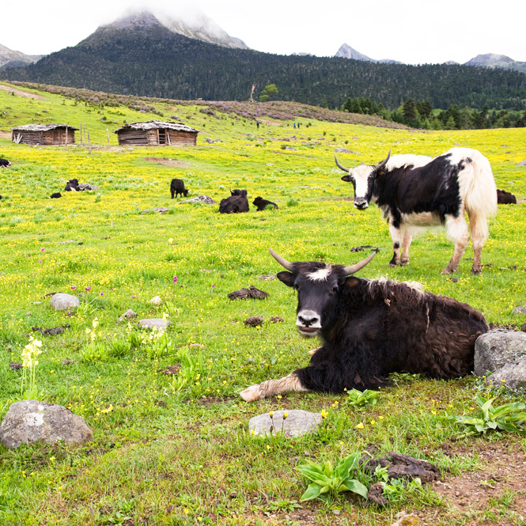
香格里拉
长白山
阿勒泰
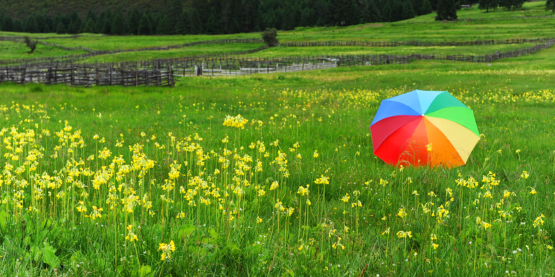
鲁朗
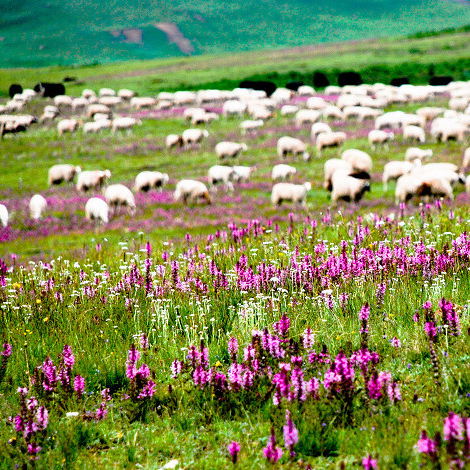
若尔盖
伊犁
狮子山
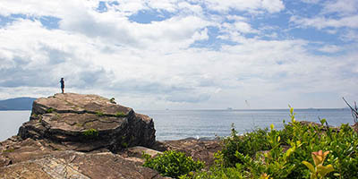
东平洲
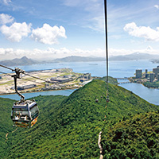
大屿山
海下湾
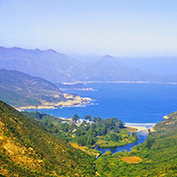
西贡
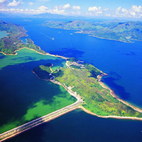
船湾
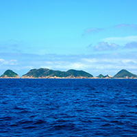
果洲群岛
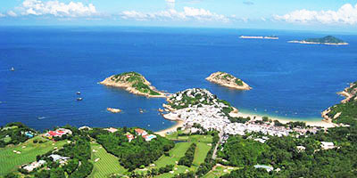
石澳
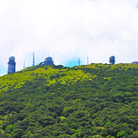
大帽山
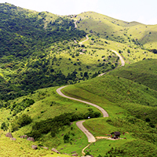
八仙岭
江苏·扬州
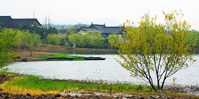
浙江·杭州
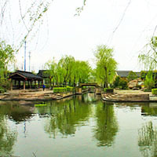
浙江·绍兴
江苏·南京
江苏·南通
浙江·嘉兴
江苏·无锡
江苏·镇江
江苏·苏州
江苏·常州
回到顶部
联系我们